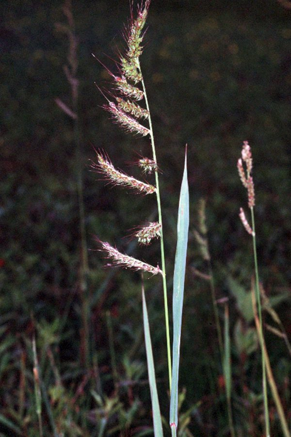

जंगली सांवाBarnyard Grass
Echinochloa crus-galli · Poaceae · FLR-0200

- Scientific nameवैज्ञानिक नाम
- Echinochloa crus-galli (L.) P. Beauv.
- Familyकुल
- Poaceae
- Hindiहिंदी
- जंगली सांवा
- Local namesस्थानीय नाम
- jangli sanwa, sanwa, samak, sanwak, barnyard grass
- Status hereयहाँ की स्थिति
- native
- Movementआवागमन
- Resident, here all year
- IUCNIUCN
- LC
- Reviewसमीक्षा
- audited and independently read
When to look कब देखें
Expected mainly in June, July, August, September, October, November.मुख्यतः जून, जुलाई, अगस्त, सितंबर, अक्टूबर, नवंबर में अपेक्षित।
Uses and possibilities उपयोग और संभावनाएँ
Drawn from the documented uses in the profile below, where each is labelled traditional, current or a research lead. All uses →
Tell it apart from इनसे अलग पहचानें
जंगली सांवा / Barnyard Grass
Echinochloa crus-galli (L.) P. Beauv. — Poaceae
जंगली सांवा (बहुआयु, जोहरी) — धान के खेतों में सबसे बड़ी समस्या वाली घास। धान जैसी दिखती है पर पतली-पाती। बीज धान के बीज के साथ मिल जाते हैं और अनाज को खराब कर देते हैं। खेत में एक-एक पौधे से सैकड़ों दाने आते हैं। धान की बालियों से मिली-जुली, पर थोड़ी मोटी और उभरी हुई। गाँवों में इसे साँवा भी कहते हैं क्योंकि इसका बीज साँवे (कोदो) जैसा दिखता है।
Quick Identification त्वरित पहचान
| Feature | Description |
|---|---|
| Plant form | Annual grass, 30–120 cm, erect or decumbent, tufted |
| Leaves | Linear, 8–20 cm long, 0.8–1.5 cm wide, midrib prominent |
| Leaf sheath | Hairless, smooth, purple-tinged at base |
| Panicles | Multiple, 10–30 cm, with branches at right angles or erect |
| Spikelets | 3–4 mm, with short awn-like bristles |
| Seeds | Oval, 2–3 mm, greenish-yellow when ripe, easily separated |
| Height | 30–120 cm, taller and coarser than cultivated rice |
Field tip: An erect, annual grass resembling rice but coarser, with thicker stems and leaves, and panicles with branches at right angles. Seeds are easily rubbed out and contaminate rice harvests. Very common in rice paddies after the monsoon.
Morphology आकारिकी
| Measurement | Range |
|---|---|
| Plant height | 30–120 cm |
| Leaf length | 8–20 cm |
| Leaf width | 0.8–1.5 cm |
| Panicle length | 10–30 cm |
| Spikelet length | 3–4 mm |
| Seed length | 2–3 mm |
Habit: Erect or decumbent annual grass; 30–120 cm tall; stems solid, slightly hairy at nodes; tillers (side shoots) freely produced from the base.
Roots: Fibrous, adventitious, spreading from lower nodes.
Leaves: Linear, grass-like, 8–20 cm × 0.8–1.5 cm; upper surface smooth or slightly hairy; midrib prominent; leaf sheath smooth, hairless, often with purple or reddish tinge near the base.
Panicles: Multiple panicles per plant, 10–30 cm long; primary branches typically at right angles or spreading; branches bearing numerous spikelets.
Spikelets: Oval, 3–4 mm; outer glumes with short, awned bristles (pseudo-awns); inner floral parts similar.
Seeds (caryopsis): Oval, 2–3 mm, greenish-yellow at maturity, easily separated from the chaff, falling quickly when ripe.
हिंदी: धान जैसी, पर मोटी और बड़ी। पत्तियाँ चौड़ी। दाने धान से अलग दिखते हैं। एक पौधे में सैकड़ों दाने।
Associated Species / Interactions संबंधित प्रजातियाँ
- Host crop: Infests Paddy paddies and irrigated rice fields
- Associated weeds: Often found with Benghal Dayflower and other wet-ground weeds
- Seed contamination: Seeds mix with harvested rice; difficult to separate cleanly
- Ecological niche: Particularly problematic in continuously flooded paddies
Life Cycle / Phenology जीवन चक्र
| Month | Event |
|---|---|
| May–June | Seeds germinate with monsoon rains; seedling emergence in waterlogged soil |
| June–July | Vegetative growth; leaf expansion and tiller development |
| July–August | Flowering; panicles elongating; spikelets opening |
| August–September | Grain filling; seeds swelling and ripening |
| September–October | Seed maturation; seeds shed easily when dry |
Total growing period: 120–150 days. Seed viability persists for 5–10 years in soil.
हिंदी: जून में बीज अंकुरण। जुलाई-अगस्त में फूल। सितंबर-अक्टूबर में बीज तैयार। बहुत लंबे समय तक ज़मीन में रहता है।
Pests and Diseases कीट और रोग
- Blast disease: Rice blast fungus can also infect barnyard grass, but rarely causes serious damage
- Stem rot: Fungal pathogens cause stem rotting in waterlogged conditions
- Generally hardy: The weed is robust and rarely suffers from serious insect pests or diseases
Agricultural / Human Relevance कृषि प्रासंगिकता
The problem:
- Seed contamination: The most significant issue is seed contamination of rice. Barnyard grass seeds are difficult to separate from rice seeds during threshing and winnowing, reducing grain quality.
- Yield competition: In heavily infested paddies, the weed competes strongly for nitrogen, light, and water, reducing rice yield by 20–50% in severe cases.
- Seed production: A single plant produces hundreds to thousands of seeds, creating severe infestation in subsequent seasons if left uncontrolled.
Control methods:
- Cultural: Early weeding (at 2–3 weeks growth), hand-pulling of seedlings (labour-intensive), and rotational flooding help suppress the weed
- Mechanical: Flame-weeding and mechanical cultivation (in non-flooded periods) are effective
- Chemical: Selective herbicides targeting grasses (fenoxaprop, bispyribac-sodium) are used in paddy fields; application at 2–3 weeks growth is most effective
Today: Echinochloa crus-galli is considered one of the most important weeds of rice cultivation globally and in India.
हिंदी: धान की फसल में सबसे बड़ी समस्या। 20-50 प्रतिशत उपज कम कर देता है। बीज से मिल जाता है। हर साल की समस्या।
Expected Locally स्थानीय रूप से अपेक्षित
Not a field record. Written from published accounts for eastern Uttar Pradesh. No confirmed local sighting yet — if you have seen it, that is what the atlas needs.
अभी तक स्थानीय पुष्टि नहीं। यह विवरण प्रकाशित स्रोतों से है, किसी अवलोकन से नहीं।
Echinochloa crus-galli is expected to be found in virtually every rice paddy in Basti district during the monsoon season (June to October). The weed should be very common, particularly in continuously flooded fields, and easily identified by comparison with cultivated rice plants.
Distribution वितरण
Global range: Native to tropical Asia; now a pantropical weed found in rice-growing regions worldwide.
In India: Ubiquitous in all rice-growing areas, particularly in the Indo-Gangetic plain.
In Uttar Pradesh: Present in virtually all rice-growing blocks.
In Basti district / eastern UP: Very common and abundant in all rice paddies.
Research Questions शोध प्रश्न
Anyone can investigate these | कोई भी इन प्रश्नों की जाँच कर सकता है
- How many seeds does one barnyard grass plant produce, and what percentage are viable? — Count seed heads; test viability.
- At what leaf-stage growth is barnyard grass most easily hand-pulled, and how much time is required per 100 m²? — Pull at different stages; time the work.
- How long do barnyard grass seeds remain viable in soil, and what triggers germination? — Bury seeds; test germination at intervals.
- Which is more effective for control: early hand-weeding (2–3 weeks) or a single herbicide spray at boot stage? — Compare methods in adjacent paddies.
- Can barnyard grass seeds be separated from rice seeds by sieving or flotation, and what is the recovery rate? / क्या धान और जंगली सांवे के बीजों को अलग किया जा सकता है? — Test separation methods.
Similar Species मिलती-जुलती प्रजातियाँ
| Species | How to tell apart | हिंदी |
|---|---|---|
| Paddy (Oryza sativa) | Cultivated rice is taller, thinner-stemmed; panicle has drooping branches; leaves narrower | धान — पतना, बाली नीचे की ओर |
| Echinochloa colona | Smaller (30–60 cm); panicle with fewer, shorter branches | छोटी प्रजाति |
| Paspalum distichum | Panicles parallel, not spreading; stoloniferous (runners) | अलग तरह की बाली |
Field rule: An erect annual grass taller and coarser than cultivated rice, with multiple panicles having branches at right angles, and seeds that easily rub off is barnyard grass.
Taxonomy & Classification वर्गीकरण
Original description. Originally described by Linnaeus as Panicum crus-galli (1753), transferred to Echinochloa by Palisot de Beauvois (1812). The genus name Echinochloa is derived from Greek echinos (spiny) and chloe (grass), referring to the spiny spikelets. The specific name crus-galli means "rooster's foot," referring to the panicle shape.
Subspecies. Several subspecies exist based on awn length and other morphological features; the typical form is widespread in South Asia.
Family and order placement. Poaceae (Grass family), order Poales. The genus contains about 30 species distributed throughout tropical and subtropical regions.
Phylogenetic notes. Echinochloa crus-galli is closely related to E. colona and E. frumentacea (cultivated varieties).
IUCN status rationale. Listed as LC (Least Concern) due to wide distribution and stable populations as a weed species.
Photo Gallery फोटो गैलरी
Photos needed आवश्यक फोटो
- [ ] Whole plant in rice paddy (पूरा पौधा)
- [ ] Panicle showing right-angled branching (बाली की संरचना)
- [ ] Comparison of panicle with rice panicle (धान से तुलना)
- [ ] Ripe seeds (पके बीज)
No photos yet — add field photos to media/species/barnyard_grass/ and run node scripts/sync_photos.js.
References संदर्भ
- Linnaeus, C. (1753). Species Plantarum, Vol. 1. Laurentii Salvii, Stockholm.
- Palisot de Beauvois, A.M.F.J. (1812). Essai d'une Nouvelle Agrostographie. Paris.
- Hooker, J.D. (1889). Flora of British India, Vol. 7. L. Reeve & Co., London.
- Indian Council of Agricultural Research (2021). Handbook of Agriculture. ICAR, New Delhi.
- Chauhan, B.S. & Johnson, D.E. (2010). Ecology and management of the weed seashore paspalum (Paspalum vaginatum) in rice. Crop Protection 29(5): 459–466.
- GBIF Occurrence Data — Echinochloa crus-galli, India (2024–2026).
Source file: species/flora/crops_associated/barnyard_grass.md